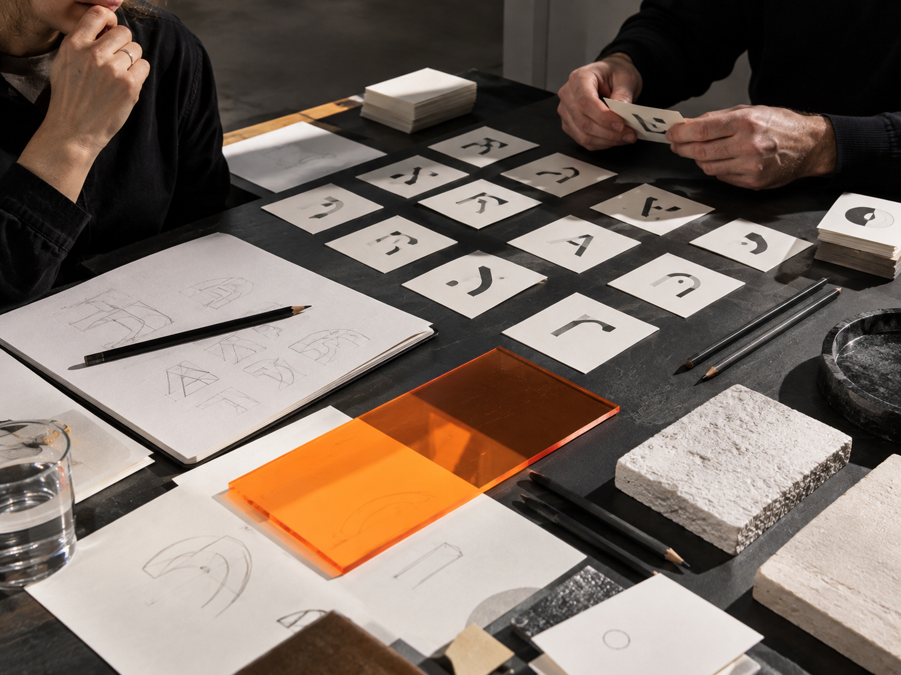
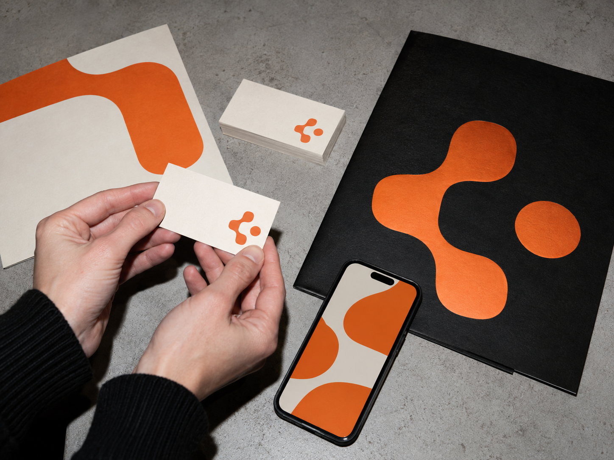
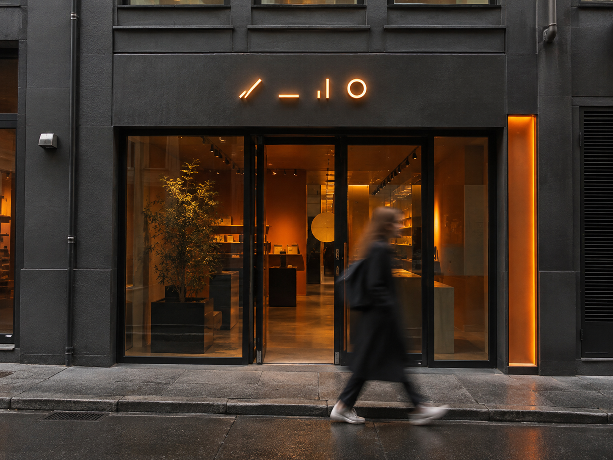

01
Дослідження
Занурюємося в продукт, категорію, аудиторію та конкурентне поле. Знаходимо теми, слова й образи, з якими бренд може працювати.
Послуги / Неймінг
Створюємо назви для бізнесу, продуктів і сервісів: з ідеєю, характером та простором для розвитку.
Досліджуємо контекст, шукаємо точне звучання й пояснюємо логіку кожного фінального напряму.
Обговорити назву ↗01 / ПІДХІД
02 / ПОСЛУГА
Назва народжується з розуміння бізнесу. Кожен крок допомагає перейти від відкритого пошуку до рішення, яке можна пояснити команді й використати на практиці.

Занурюємося в продукт, категорію, аудиторію та конкурентне поле. Знаходимо теми, слова й образи, з якими бренд може працювати.
Фіксуємо характер бренду й критерії майбутньої назви: що вона має передавати, для кого звучати та як використовуватиметься.
Шукаємо назви через смислові асоціації, метафори, словотворення й несподівані зв’язки. Розглядаємо кілька напрямів.

Відбираємо ідеї за змістом, виразністю, простотою вимови та відповідністю позиціонуванню. Схожі й слабкі варіанти відсіюємо.
Дивимося, як назва читається, пишеться і звучить у потрібних мовах. Перевіряємо небажані асоціації та очевидні ризики плутанини.

Перевіряємо доступні написання для домену й соціальних платформ та оцінюємо, наскільки зручно шукати назву онлайн.
Пояснюємо логіку кожного фінального напряму: його ідею, звучання, характер і приклади використання в комунікації.
Готуємо написання, вимову й правила застосування назви, щоб команда могла послідовно використовувати її на різних носіях.
03 / КОЛИ ЦЕ АКТУАЛЬНО
Потрібна назва, яка стане основою для позиціонування, айдентики й першої комунікації.
Запускаєте окрему лінійку чи сервіс і хочете дати йому власний характер у межах бренду.
Поточна назва складно читається або має небажані асоціації для нової аудиторії.
Бізнес змінився, а стара назва більше не пояснює, чим ви займаєтеся і куди рухаєтесь.
СЕНС ПЕРШ НІЖ ЛІТЕРИ
Влучне слово не повинно пояснювати все одразу. Його сила — в характері, який можна послідовно розвивати в дизайні, текстах, продукті та досвіді клієнта.
04 / ПРОЄКТИ
Приклади того, як назва, характер і візуальна система зустрічаються в реальних брендах. Склад робіт у кожному проєкті — за посиланням на кейс.
05 / ЗВОРОТНИЙ ЗВ’ЯЗОК
Демонстраційні формулювання для макета сторінки. Це не опубліковані відгуки клієнтів; перед використанням їх потрібно замінити підтвердженими цитатами.
ПРИКЛАД ВІДГУКУ 01«Нам було важливо знайти коротку назву, що передає ідею продукту й звучить природно для нашої аудиторії. Аргументація допомогла команді зробити вибір».
ПРИКЛАД ВІДГУКУ 02«Ми побачили кілька різних напрямів і змогли порівняти їх не тільки за власними вподобаннями, а й за змістом, звучанням та можливістю розвитку».
ПРИКЛАД ВІДГУКУ 03«Назва стала зрозумілою відправною точкою для майбутньої айдентики й комунікації. Особливо цінною була логіка, що стоїть за фінальними варіантами».
ПРИКЛАД ВІДГУКУ 04«Після дослідження стало зрозуміло, які асоціації важливі для нашого ринку. Це допомогло уникнути випадкового рішення й обрати напрям усвідомлено».
06 / ЗАСТОСУВАННЯ
Ілюстративні концепти: назва може жити на упаковці, вивісці, у презентації та щоденних матеріалах бренду. Ці фото не є клієнтськими роботами.
07 / ПРОЦЕС
Обговорюємо бізнес, аудиторію, продукт, географію та очікування від назви.
Вивчаємо конкурентне середовище, мовний контекст і простір для відмінності.
Погоджуємо смислові й практичні рамки: характер, мови, довжину, написання.
Створюємо назви в різних напрямах і перевіряємо, чи відповідають вони задачі.
Залишаємо сильні варіанти після перевірки звучання, написання й очевидних збігів.
Пояснюємо кожну концепцію і готуємо рекомендації щодо фінального вибору.
08 / ДЕТАЛЬНІШЕ
Неймінг — це створення назви для компанії, продукту, послуги чи окремої лінійки. Вдала назва допомагає запам’ятати бренд, задає тон комунікації та формує перше уявлення про нього. Але назва не працює сама по собі: вона має підтримувати позиціонування та відповідати реальному продукту.
Ми розглядаємо слово в контексті: як його вимовляють у розмові, як воно виглядає на упаковці й екрані, чи залишає простір для розвитку асортименту. Так назва стає частиною системи, а не випадковою красивою фразою.
Почніть із задачі. Одному бренду потрібне пряме й зрозуміле ім’я, іншому — образ або несподівана асоціація. Сильний варіант має відповідати характеру компанії, бути доречним у своїй категорії та відрізнятися від конкурентів.
Ми оцінюємо зміст, звучання, написання й можливість використання. Назву варто побачити на реальних носіях: у заголовку сайту, вивісці, презентації та пошуку. Якщо вона однаково добре працює в цих ситуаціях, її легше розвивати далі.
Робота починається з дослідження бізнесу й аудиторії. Далі ми визначаємо території пошуку, генеруємо ідеї, відбираємо найсильніші та перевіряємо їх на мовні й практичні обмеження. Кожен фінальний напрям подаємо з аргументацією.
Попередня оцінка цифрового використання й очевидних збігів допомагає звузити вибір, але не замінює юридичної перевірки торговельної марки. Вона потрібна перед рішенням про реєстрацію та запуск.
Назва впливає на тон бренду, візуальну ідею, слоган і те, як продукт представляють людям. Коли позиціонування ще не визначене, до пошуку назви варто спершу сформулювати основну ідею бренду.
Після вибору назви її можна розгорнути в логотип, айдентику, упаковку, сайт і комунікацію. У такій послідовності кожне рішення продовжує попереднє, а бренд сприймається цілісно.
09 / РЕЗУЛЬТАТ
Короткий аналіз категорії та контексту.
Критерії оцінки назви.
Кілька опрацьованих напрямів неймінгу.
Обґрунтування фінальних варіантів.
Рекомендації щодо написання та вимови.
Попередній пошук очевидних збігів.
Погляд на доменне та цифрове використання.
Презентацію для ухвалення рішення.
Перелік адаптуємо до задачі й погоджуємо в пропозиції до початку роботи.
10 / FAQ
Вартість залежить від масштабу задачі: одна назва для продукту, новий бренд або система назв для кількох напрямів потребують різного обсягу дослідження та відбору. Після короткого знайомства ми визначимо склад робіт і підготуємо кошторис.
Термін залежить від кількості мов, ринків і того, наскільки складним є процес погодження. Робота проходить послідовно: бриф, дослідження, генерація, відбір, перевірка та презентація.
Ми не вимірюємо результат кількістю випадкових слів. У презентацію входять опрацьовані напрями з поясненням і рекомендацією. Кількість фінальних варіантів фіксуємо в пропозиції до початку роботи.
Ми робимо попередній пошук очевидних збігів, дивимося на написання в пошуку й цифрових каналах. Юридичну можливість реєстрації торговельної марки підтверджує профільний фахівець після окремої перевірки.
Так. Неймінг може бути самостійним проєктом. Якщо потрібна цілісна система, назву можна розробляти разом зі стратегією, слоганом, айдентикою або сайтом.
Так. На старті визначаємо ключові мови й країни, а під час відбору зважаємо на читання, вимову та можливі асоціації в цих контекстах. Для спеціалізованої мовної або юридичної експертизи залучають відповідних фахівців.
Так. У випадку ренеймінгу спочатку з’ясовуємо, які асоціації старої назви варто зберегти, а які заважають розвитку. Потім шукаємо новий напрям і плануємо, як пояснити зміну аудиторії.
ВАША НАЗВА МОЖЕ ПОЧАТИСЯ ТУТ
Розкажіть про продукт, бізнес або ідею. Ми запропонуємо формат роботи відповідно до задачі.
Обговорити проєкт ↗